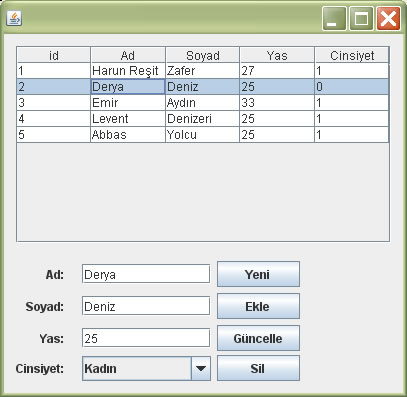

Netbeans, Java, MySQL: Örnek Veritabanı Uygulaması – 2
Bir önceki uygulamadan farklı olarak bu örnekte her veritabanı işlemi (seç, ekle, güncelle, sil ) için bağlantıyı açıp kapayacağız ve gerekli tüm SQL kodlarını kendimiz yazacağız. Yazının sonunda ise hangi yaklaşımın daha iyi olduğunu tartışacağız. Hazırlayacağımız uygulamanın pencere görünümü:

Not: Bu makaleyi uygulayabilmeniz için bilgisayarınızda Netbeans ve MySQL’in kurulu olması ve gerekli ayarların yapılmış olması gerekiyor ki bu ayrıntılar birinci yazıda anlatıldı.
Veritabanının Oluşturulması
Birinci örnekte kullandığımız veritabanının aynısını kullanacağız. Veritabanını oluşturmak için gerekli kodları orada bulabilirsiniz. Bu kodları nasıl kullanacağınızı bilmiyorsanız, yine o yazıdaki videoyu izleyiniz.
Eğer birinci örneği bilgisayarınızda uyguladıysanız zaten veritabanınız hazır demektir. Bu kısmı atlayabilirsiniz.
Veritabanına Bağlantı
Bu kısım da birinci yazıdaki ile aynı. Yalnız arada önemli bir fark var. Birinci örnekte baglantıAc() ve baglantıKapat() metodlarını yalnızca bir defa kullanmıştık. Burada ise her veritabanı işlemi için kullanacağız. Zaten bağlantı açma ve kapama işlemlerini birer metod (fonksiyon) haline getirmemizin esas sebebi de bu örnekti.
DBConnection ve myTableModel Sınıfları
Programımız iki sınıftan oluşuyor. Birinci sınıf neredeyse tüm işi yapan ve bu yazıda üzerinde duracağımız DBConnection sınıfı. Diğer sınıf ise myTableModel sınıfı ki aslında tek yaptığı iş veritabanı kayıtlarını yukarıdaki resimde gördüğünüz gibi bir tabloya yazabilmemizi mümkün kılmak. Bu sınıf üzerinde fazla kafa yormanıza gerek yok bence. Java’da neden bu iş için ayrı bir sınıf yazmamız gerektiğini anlayamadım doğrusu. Aynı işi örneğin C# dilinde doğrudan yapabiliyoruz. Neyse…
TabloDoldur() Metodu
Buradaki Tablo ifadesini veritabanındaki tablo ile karıştırmayın. Pencerde kullandığımız görsel tablodan (Jtable nesnesi) bahsediyoruz. Bu metodun işi veritabanındaki kisiler tablosunu olduğu gibi penceremizdeki tabloya aktarmak. Ekleme, silme, güncelleme gibi her işlemden sonra çağırıyoruz ki veritabanındaki değişiklikler penceremize anında yansısın.
public void TabloDoldur() {
try {
Statement st = baglantiAc(); //Bağlantıyı aç
ResultSet res = st.executeQuery("SELECT * FROM kisiler"); //VT'den kayıtları ResultSet'e al
myTableModel model = new myTableModel(res); //Tablomuza model oluştur
jTable1.setModel(model); //Tabloyu res'teki kayıtlar ile doldur
baglantiKapat(); //Bağlantıyı kapat
} catch (Exception e) {
JOptionPane.showConfirmDialog(null, "Bağlantı Başarısız", "MySQL Bağlantısı", JOptionPane.PLAIN_MESSAGE);
}
}Kayıt Ekleme
Bu metod “Ekle” düğmesine tıklandığında çağırılacak ve on anda formdaki bilgileri parametre olarak alacak.
public void KayitEkle(String ad, String soyad, String yas, String cinsiyet) {
try {
Statement st = baglantiAc();
String sql= "INSERT INTO vt.kisiler (Ad, Soyad, Yas, Cinsiyet) VALUES (" +
"'" + ad + "', " +
"'" + soyad + "', " +
"" + yas + ", " +
"" + cinsiyet + ")";
//System.out.println(sql); sorgunun doğru yazıldığından emin olmak için ekrana yazdırabilirsiniz.
st.executeUpdate(sql); //sorguyu çalıştır
baglantiKapat(); //bağlantıyı kapat
TabloDoldur(); //Penceremizdeki tabloyu yeniden doldur (güncelle)
}catch (Exception e) {
JOptionPane.showConfirmDialog(null, "Kayıt Eklenemedi", "Kisiler Tablosu", JOptionPane.PLAIN_MESSAGE);
}
}“Ekle” düğmesine basıldığında çalışacak olan metod ise şöyle:
private void ekleButtonActionPerformed(java.awt.event.ActionEvent evt) {
String ad = AdTextField.getText();
String soyad = soyadTextField.getText();
String yas = yasTextField.getText();
String cinsiyet;
if (cinsiyetComboBox.getSelectedIndex() == 0) {
cinsiyet = "0";
} else {
cinsiyet = "1";
}
KayitEkle(ad, soyad, yas, cinsiyet);
}Kayıt Silme
Bu metod “Sil” düğmesine tıklandığında çağırılacak ve on anda tablod seçili olan satır silinecek. Bu metod parametre olarak silinecek kaydın ID‘sini alıyor. ID bilgisi pencere tablosunda görünmüyor çünkü tablo ikinci kolondan itibaren bilgileri gösteriyor. Bunu myTableModel isimli sınıfta öyle kodladık çünkü.
public void KayitSil(String ID) {
try {
Statement st = baglantiAc();
st.executeUpdate("Delete FROM kisiler where id=" + ID);
baglantiKapat(); //bağlantıyı kapat
TabloDoldur(); //Penceremizdeki tabloyu yeniden doldur (güncelle)
} catch (Exception e) {
JOptionPane.showConfirmDialog(null, "Kayıt Silinemedi", "Kişiler Tablosu", JOptionPane.PLAIN_MESSAGE);
}
}“Sil” düğmesine basıldığında çalışacak olan metod:
private void silButtonActionPerformed(java.awt.event.ActionEvent evt) {
String ID = jTable1.getValueAt(jTable1.getSelectedRow(), 0).toString();
KayitSil(ID);
}Kayıt Güncelleme
Güncelleme ekleme ve silmenin bir bileşimi gibi aslında. Hem güncellecenek tüm alanları hem de güncellecenek kaydın ID’sini parametre olarak alıyor.
public void KayitGuncelle(String ID, String ad, String soyad, String yas, String cinsiyet) {
try {
Statement st = baglantiAc();
String sql = "UPDATE vt.kisiler SET " +
"Ad='" + ad + "', " +
"Soyad='" + soyad + "', " +
"yas=" + yas + ", " +
"cinsiyet=" + cinsiyet +
" WHERE ID=" + ID ;
st.executeUpdate(sql); //sorguyu çalıştır
baglantiKapat(); //bağlantıyı kapat
TabloDoldur(); //Penceremizdeki tabloyu yeniden doldur (güncelle)
} catch (Exception e) {
JOptionPane.showConfirmDialog(null, "Kayıt Güncellenemedi", "Kişiler Tablosu", JOptionPane.PLAIN_MESSAGE);
}
}“Güncelle” düğmesine basıldığında çalışacak olan metod:
private void guncelleButtonActionPerformed(java.awt.event.ActionEvent evt) {
String ID = jTable1.getValueAt(jTable1.getSelectedRow(), 0).toString();
String ad = AdTextField.getText();
String soyad = soyadTextField.getText();
String yas = yasTextField.getText();
String cinsiyet;
if (cinsiyetComboBox.getSelectedIndex() == 0) {
cinsiyet = "0";
} else {
cinsiyet = "1";
}
KayitGuncelle(ID, ad, soyad, yas, cinsiyet);
}
Tabloda Tıklanan Satırın Bilgilerinin Forma Gelmesi
Tabloda bir satıra tıkladığımızda o satırdaki bilgilerin forma yansıması aşağıdaki olay işleyici metod ile oluyor. Bu metod tabloya ait bir metod ve imleç tablo üzerindeyken fareye her basıldığında çağrılıyor.
private void jTable1MousePressed(java.awt.event.MouseEvent evt) {
//Tabloda üzerine tıklanılan satırın bilgilerini ilgili form elemanlarına yazar.
AdTextField.setText(jTable1.getValueAt(jTable1.getSelectedRow(), 1).toString());
soyadTextField.setText(jTable1.getValueAt(jTable1.getSelectedRow(), 2).toString());
yasTextField.setText(jTable1.getValueAt(jTable1.getSelectedRow(), 3).toString());
String cinsiyet = jTable1.getValueAt(jTable1.getSelectedRow(), 4).toString();
if (cinsiyet.equals("1")){
cinsiyetComboBox.setSelectedIndex(1);
}
else{
cinsiyetComboBox.setSelectedIndex(0);
}
}Sonuç
Birinci örnekteki yaklaşıma göre bu örneğin iki avantajı var. Birincisi yalnızca gerektiğinde bağlantı açılıyor ve iş bitince hemen kapanıyor. Aynı veritabanını birden fazla uygulama kullanıyorsa, örneğin bir web sitesi veritabanı, veritabanı gereksiz yere meşgul edilmemiş oluyor. İkincisi ise bu yaklaşım bence daha esnek. SQL kodlarına daha hakim olmamızı sağlıyor. Dezavantaj olarak ise SQL kodlarını String olarak yazarken sıkça yapılan, zaman ve sabır kaybına neden olan hatalar. Benzer kodları kendiniz yazdığınızda ne demek istediğimi daha iyi anlayacaksınız. Bir sonraki örnekte aynı yaklaşımı kullanan ama bahsettiğim zaman ve sabır kaybına neden olan hataları daha az yapmamıza olanak veren bir yöntemden bahsedeceğim. Kodların tamamını NetBeans projesi olarak buradan indirebilirsiniz.
Herkese kolay gelsin
İlgili Yazılar
- Netbeans, Java, MySQL: Örnek Veritabanı Uygulaması – 1
- Netbeans, Java, MySQL: Örnek Veritabanı Uygulaması – 3
- Java ve SQLite: Örnek Veritabanı Uygulaması – 4
30 Ocak 2010 Cumartesi tarihinde yayınlandı.